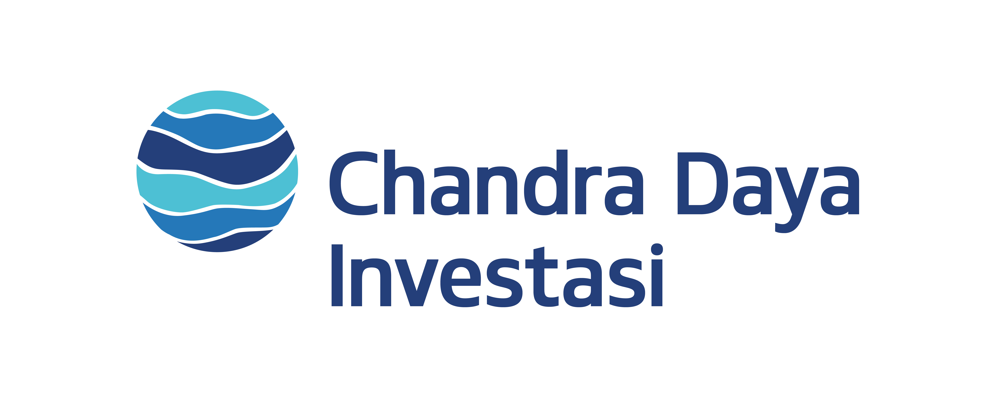

| HOME | PROFILE | CONTACT | DATA MAHASISWA |
#YourGrowthPartner
PT Chandra Daya Investasi Tbk (CDI Group) merupakan bagian dari investasi infrastruktur Chandra Asri Group, penyedia bahan kimia energi dan solusi infrastruktur terkemuka di Asia Tenggara dan EGCO, perusahaan induk yang berfokus pada investasi bisnis ketenagalistrikan di Thailand. CDI Group beroperasi terutama di sektor infrastruktur, dengan fokus pada penyediaan solusi yang mendukung pertumbuhan industri di seluruh Asia Tenggara.
Beragam operasi CDI Group mencakup beberapa pilar bisnis yang saling terkait, termasuk penyediaan dan pengolahan air, energi, kepelabuhanan & penyimpanan, dan logistik. CDI Group berkomitmen untuk berkontribusi dalam pengembangan dan pemenuhan kebutuhan infrastruktur penting, yang mendorong pertumbuhan ekonomi berkelanjutan di kawasan tersebut.
Sebagai perusahaan yang berpikiran maju, CDI Group terus berupaya untuk menjadi pemimpin di sektor infrastruktur baik di Indonesia maupun Asia Tenggara. Inovasi, efisiensi, dan keberlanjutan merupakan inti dari semua pilar bisnisnya.
CDI Group telah membentuk kemitraan strategis dengan para pemimpin domestik dan global yang memiliki reputasi baik, seperti Krakatau Steel Group, Salim Group, dan Posco, yang menambah nilai dan keahlian pada operasinya serta memperkuat posisi pasarnya.